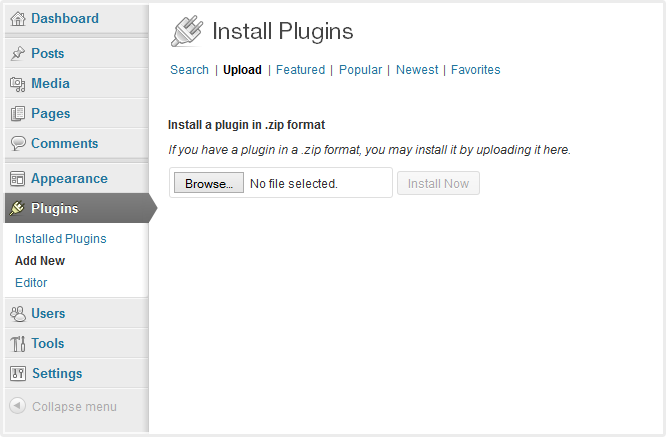
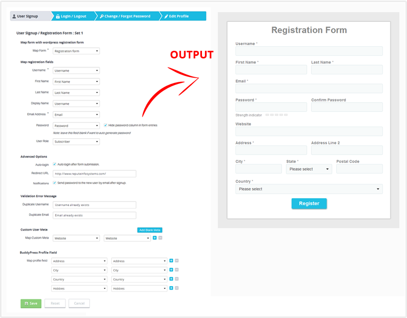
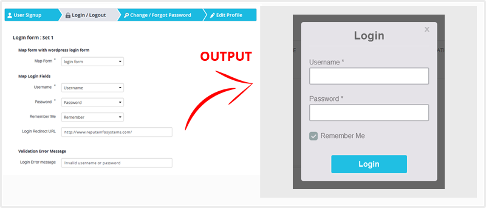
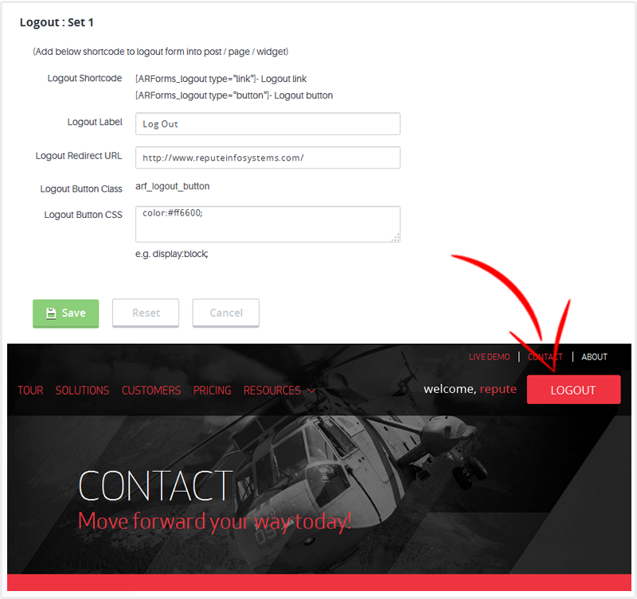
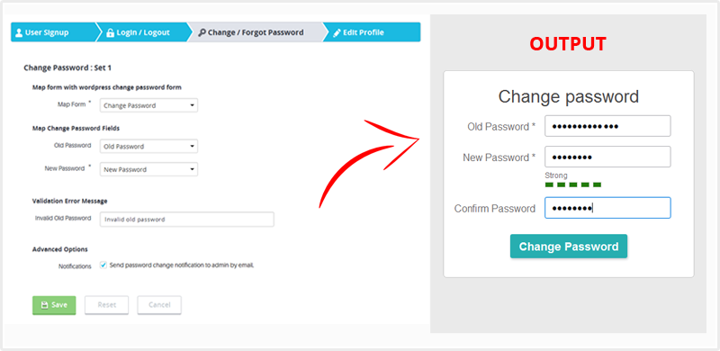
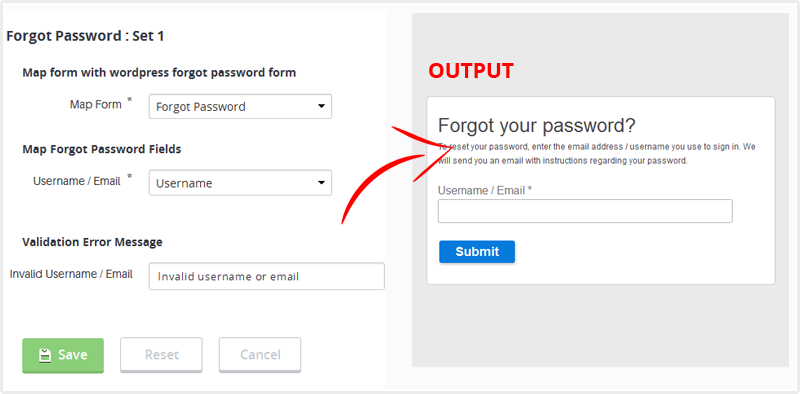
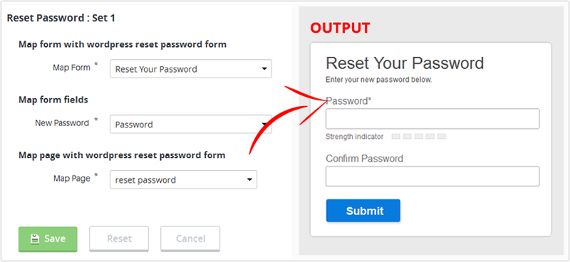
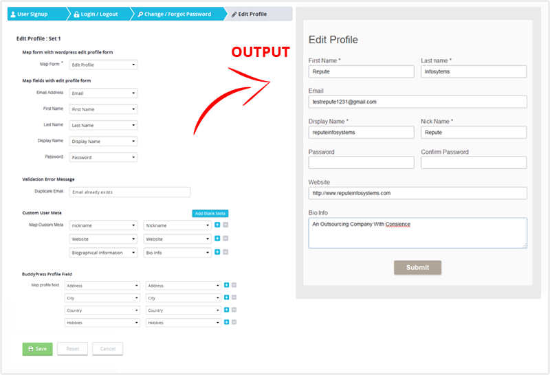

Creating a User within WordPress is now possible with ARForms.The User Signup Add-On for ARForms makes registering with wordpress so easy as never before.
Use ARForms to allow users to register for your site and also edit their profile / Change their password / Retrieve their password from the front-end. User Signup For ARForms Add-on allows you to easily reference user meta and auto-populate forms with a logged-in user's information. This Add-on comes with complete user management solution.
You can install plugin either of these two methods.
1) New install via FTP
a. Download the plugin from CodeCanyon, and extract it. You should find a directory named arformsusersignup.
b. In your WordPress installation, upload arformsusersignup to directory wp-content/plugins/
c. Activate the "User Signup For ARForms" plugin through the Plugins menu from WordPress admin panel.
2) New install via the WordPress Uploader
a. Download the plugin from CodeCanyon
b. Log in to your WordPress admin panel
c. go to Plugins -> Add New -> Upload
d. Click on choose file and browse the download package from CodeCanyon. When the plugin uploads successfully, click on Activate Plugin link.
After activating the plugin, you will be able to see "User Signup Configuration" link under “ARForms” menu in admin menu list.

User Signup For ARForms integrates your form entries and user registration seamlessly with your wordpress site. You need to just map your existing form with User signup configuration. and That's it, its ready to use. As you can see in below screenshot, You can map default wordpress registration fields as well as you can set new user meta(s) for additional fields. You can map existing meta as well as you can add new user metas.
You can also send notification to users after successful signup with your site. You can also allow your users to login automatically, immediately after successful signup.

ARForms User Signup Add-on allows you to login user within your site only. For that you can map existing ARforms' form with this Add-on. User will be logged-in to your site after submitting form with correct credentials. You can also manage redirection URL after successful logged-in to your site. You can set your custom message for invalid login attempt by website user.
You can also map "Remember Me" option to allow your website users to remember user with your site.

You can put a link or Button for user logout. just place a shortcode from this add-on for logout. You do not need to manage anything else.
(Add below shortcode into post / page / widget)
1) [ARForms_logout type="link"] - Logout link
2) [ARForms_logout type="button"] - Logout button
If you want to change css of logout button / link you can add properties to "arf_logout_button" class. Or you can add your CSS properties into textarea which is given in Logout configuration page.

ARForms User Signup Add-On allows your site users to change their password from front-end. This add-on has facility to validate user's old password before change new password.
ARForms User Signup Add-On also allows to send notifications to site administrator while user change their password from front-end.

With this add-on your site users also can retrieve their forgotten password by entering their email or username from front-end. You can set your custom message in case of invalid username or password found while retrieve their password.

With this add-on your site users also can reset forgotton password with ARForms' form. You need to assign a Reset Password page where you have already set Reset Password form.

ARForms User Signup Add-On allows your site users to edit their profile from front-end. This add-on will auto populate all the user's data which he has entered while signup. User can modify his profile data and update their profile immediately after submitting the form.
In edit profile page, all fields will be pre-populated based on a logged-in user's information

Version 1.3 (18 December, 2014)
Version 1.2 (20 October, 2014)
Version 1.1.1 (21 August, 2014)
Version 1.1 (05 August, 2014)